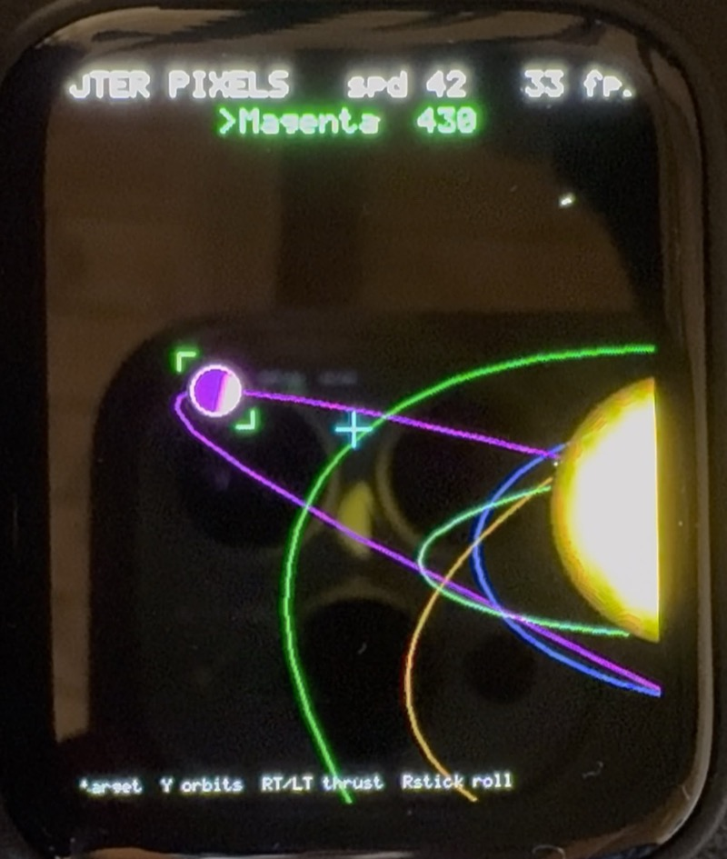

Own build · 2026
Ghost Pixel Lab
A pocket computer on a 1.8-inch AMOLED panel. It boots into a touch launcher holding two headline apps — a Commodore 64 you program in BASIC, and an Outer-Wilds-style space sim that lands you on procedural voxel terrain — plus a dozen smaller hardware experiments.
- MCU
- ESP32-S3R8 · 240 MHz · 8 MB PSRAM
- Display
- SH8601 AMOLED · 368 × 448 · QSPI
- Language
- Modern C++
- Toolchain
- PlatformIO
- Status
- Active sandbox
The machine underneath
Before any of the apps existed there had to be something to run them on. The engine layer
provides a touch launcher, a double-buffered DMA renderer, a sound mixer with MP3 playback,
storage, and Wi-Fi/BLE — with a single App interface that every experiment
implements.
Files live under /GHOST on the SD card, or on internal flash when no card is
present. core::files picks whichever is available at boot and every app shares
the same layout, so an app never needs to know which one it got.
| Part | Role |
|---|---|
| ESP32-S3R8 | 240 MHz, 8 MB octal PSRAM, 16 MB flash, Wi-Fi 4 + BLE 5 |
| SH8601 | 1.8" AMOLED, 368 × 448, QSPI |
| FT3168 | Capacitive touch |
| QMI8658 | 6-axis IMU — gyroscope and accelerometer |
| ES8311 | Mono audio codec, speaker and MEMS microphone |
| AXP2101 | Power management, LiPo charging, battery telemetry |
| PCF85063 | Real-time clock with backup-battery pads |
| TCA9554 | 8-bit I/O expander driving the LCD and touch resets |
Ghost BASIC
A Commodore 64 in spirit, not an emulator. A 40 × 25 PETSCII screen with its own hand-drawn 8 × 8 font, the authentic screen editor — cursor up to an old line, change it, press RETURN and it is re-entered — and a BASIC V2-flavoured interpreter, down to the original error messages.
You type on a Bluetooth-LE keyboard paired through the BLE Scan app, or on the USB serial
console when no keyboard is around. Programs SAVE and LOAD against
/GHOST/BASIC, and DIRECTORY lists what is there.
Outer Pixels
The headline app, and the one in the video above: a 6-DOF ship flown between orbiting planets. Drop low enough and the renderer switches from the space view to a Comanche-style voxel terrain you fly through — generated procedurally in the background so the transition is seamless rather than a loading screen.
There are three ways to fly it. An Xbox pad over BLE is the full experience. Without one,
holding a finger on the screen steers and acts as the throttle, and lifting it brakes the
ship to a stop. A keyboard works too: arrows steer, Q/E roll,
W/S thrust and brake, A picks the planet under the
crosshair.

Everything else
Behind Others in the launcher sits the pile of experiments the board exists for: BLE Scan (find and pair a Bluetooth keyboard), Disk (storage info and format), Cube 3D (an IMU-driven wireframe), Sensor Lab (hardware dashboard), Echo (microphone straight to speaker), Piano (touch synth), Sand (falling sand with tilt), Maze Ball, Level (spirit level), Music (MP3 from flash and SD), WiFi Scan, and Pad Lab (Xbox controller over BLE, rumble included).